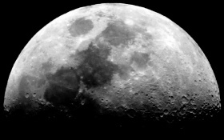
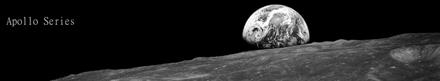

-
 Observational Astronomy - Looking through a telescope can be truly rewarding. When I was young, I remember looking through a spotting scope at Saturn, now I own telescopes big enough to spot several of its moons. Some of my photos are of objects in my telescope field.
-
Web Projects
JQ Dashboard (2014 Release) - I have been working on a JQuery dashboard for displaying charts using gridster (the technology behind this page's drag and drop layout) and the graphing jquery libraries for jqplot. I may also use datatables to help display data.
--Astronomy Graphs (Late 2014) - After the release of the JQDashboard, I plan to make console applications to display astronomy charts.Browser MMORTS (Release around 2018) - I have wanted to create a browser MMORTS for a long time and have worked a little bit on the content of the game. I will likely start work on this again after the JQDashboard is done.
Timelapse Movie (Long term, unknown release) - As opportunities present themselves, I plan on beginning to take timelapse photos of scenery, wildlife, and astronomy, and I will compose them into a 10-15 minute long movie.
-
I am a proud member of the IDA, which protects our nightskies.
-
Proud member of the Planetary Society, to promote exploration.
-
My blog is nathanphoffman.com I primarily post photos.
-
My twitter account is @nathanphoffman
-

All work of my work is licensed under CC BY CS SA 3.0
-

Gallery - I have posted some of my best photography over at this gallery. Photos marked as "My Favorites" are available in full resolution. Before posting or sharing my photos, please read CCBYCSSA 3.0
-
Fight for Space
The movie Fight for Space will be out in the next few months, but until then, you can find-out more from these links:
-We Stopped Dreaming
-- Episode 1
-- Episode 2
-We are the Explorers
-Dream Big
-Penny 4 NASA - History of the Space Race - I have had a plan of doing a documentary series on the space race in a great amount of detail. I have already developed a decent framework and am going to be purchasing a higher quality mic for this project. The release date depends one when I begin the project, but I plan for it to be a few dozen episodes, so it will likely run for a solid year or so.
-
